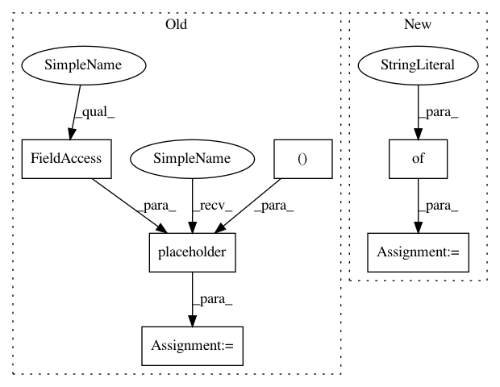

a55f9be217b2320cec7c7dc44a8245496f851af5,softlearning/algorithms/sac.py,SAC,_init_placeholders,#SAC#,120
Before Change
name="rewards",
)
self._terminals_ph = tf.placeholder(
tf.float32,
shape=(None, 1),
name="terminals",
)
if self._store_extra_policy_info:
self._log_pis_ph = tf.placeholder(
tf.float32,
After Change
- reward
- terminals
self._placeholders = {
"iteration": tf.placeholder(
tf.int64, shape=None, name="iteration",
),
"observations": tf.placeholder(
tf.float32,
shape=(None, *self._observation_shape),
name="observation",
),
"next_observations": tf.placeholder(
tf.float32,
shape=(None, *self._observation_shape),
name="next_observation",
),
"actions": tf.placeholder(
tf.float32,
shape=(None, *self._action_shape),
name="actions",
),
"rewards": tf.placeholder(
tf.float32,
shape=(None, 1),
name="rewards",
),
"terminals": tf.placeholder(
tf.bool,
shape=(None, 1),
name="terminals",
),
}
def _get_Q_target(self):
next_observations = self._placeholders["next_observations"]
next_actions = self._policy.actions([next_observations])
In pattern: SUPERPATTERN
Frequency: 3
Non-data size: 6
Instances
Project Name: rail-berkeley/softlearning
Commit Name: a55f9be217b2320cec7c7dc44a8245496f851af5
Time: 2019-06-01
Author: hartikainen@berkeley.edu
File Name: softlearning/algorithms/sac.py
Class Name: SAC
Method Name: _init_placeholders
Project Name: rail-berkeley/softlearning
Commit Name: a55f9be217b2320cec7c7dc44a8245496f851af5
Time: 2019-06-01
Author: hartikainen@berkeley.edu
File Name: softlearning/algorithms/sac.py
Class Name: SAC
Method Name: _init_placeholders
Project Name: tensorflow/cleverhans
Commit Name: f733c10b877c136cfc6fb496286e3345ef6bcaf2
Time: 2017-10-13
Author: aurkor@google.com
File Name: tests_tf/test_utils.py
Class Name: TestUtils
Method Name: test_get_logits_over_interval
Project Name: rail-berkeley/softlearning
Commit Name: a55f9be217b2320cec7c7dc44a8245496f851af5
Time: 2019-06-01
Author: hartikainen@berkeley.edu
File Name: softlearning/algorithms/sql.py
Class Name: SQL
Method Name: _init_placeholders